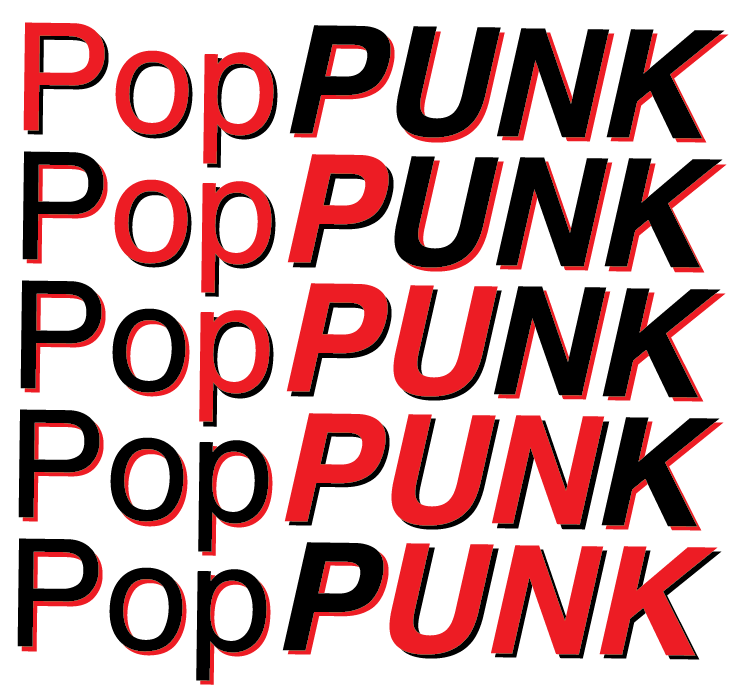

PopPUNK documentation#
PopPUNK is a tool for clustering genomes. We refer to the clusters as variable-length-k-mer clusters, or VLKCs. Biologically, these clusters typically represent distinct strains. We refer to subclusters of strains as lineages.
If you are new to PopPUNK, we’d recommend starting on Installation, then by reading the Overview.
The first version was targeted specifically as bacterial genomes, but the current version has also been used for viruses (e.g. enterovirus, influenza, SARS-CoV-2) and eukaryotes (e.g. Candida sp., P. falciparum). Under the hood, PopPUNK uses pp-sketchlib to rapidly calculate core and accessory distances, and machine learning tools written in python to use these to cluster genomes. A detailed description of the method can be found in the paper.
Important
Looking for older versions of the documentation? For previous versions with
the old API (--assign-query, --refine-fit etc) see v2.2.0.
For older versions which used mash, see v1.2.0.
Contents:
- PopPUNK documentation
- Installation
- Overview
- Sketching (
--create-db) - Data quality control (
--qc-db) - Fitting new models (
--fit-model) - Distributing PopPUNK models
- Query assignment (
poppunk_assign) - Creating visualisations
- Minimum spanning trees
- Subclustering with PopPIPE
- Using GPUs
- Troubleshooting
- Scripts
- Iterative PopPUNK
- Citing PopPUNK
- Reference documentation
- Roadmap
- Miscellaneous
Why use PopPUNK?#
The advantages of PopPUNK are broadly that:
It is fast, and scalable to over \(10^{5}\) genomes in a single run.
Assigning new query sequences to a cluster using an existing database is scalable even beyond this.
Cluster names remain consistent between studies, and other cluster labels such as MLST can be appended.
Databases can be updated online (as sequences arrive).
Online updating is equivalent to building databases from scratch.
Databases can be kept small and managable by only keeping representative isolates.
Databases naturally allow in-depth analysis of single clusters, but keeping the full context of the whole database.
There is no bin cluster. Outlier isolates will be in their own cluster.
Pre-processing, such as generation of an alignment, is not required.
Raw sequence reads can be used as input, while being filtered for sequencing errors.
The definition of clusters are biologically relevant.
Many quantitative and graphical outputs are provided.
A direct import into microreact is available, as well as cytoscape, grapetree and phandango.
Everything is available within a single python executable.
Citation#
If you find PopPUNK useful, please cite as:
Lees JA, Harris SR, Tonkin-Hill G, Gladstone RA, Lo SW, Weiser JN, Corander J, Bentley SD, Croucher NJ. Fast and flexible bacterial genomic epidemiology with PopPUNK. Genome Research 29:1-13 (2019). doi:10.1101/gr.241455.118
See Citing PopPUNK for more details.